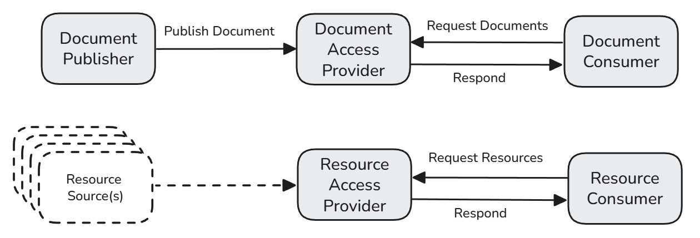

EU Health Data API
1.0.0-ballot - ballot
150
EU Health Data API
1.0.0-ballot - ballot
150
EU Health Data API - Local Development build (v1.0.0-ballot) built by the FHIR (HL7® FHIR® Standard) Build Tools. See the Directory of published versions
| Official URL: http://hl7.eu/fhir/health-data-api/ImplementationGuide/hl7.fhir.eu.health-data-api | Version: 1.0.0-ballot | ||||
| Draft as of 2026-10-23 | Computable Name: EuHealthDataApi | ||||
Copyright/Legal: Copyright HL7 Europe. Licensed under Creative Commons public domain (CC0 1.0). |
|||||
The European Health Data Space (EHDS) regulation describes an obligation for EHR systems to include an Interoperability Component that does the following:
This Implementation Guide:
See Regulatory Anchors for more detail on the link to the EHDS regulation requirements, and the technical interpretation of those requirements used here.
This IG defines exchange patterns — actors, transactions, and security — that systems use to find, retrieve, and publish EEHRxF health data via FHIR APIs. It covers authorization, patient matching, document exchange, resource access, and capability discovery.
This IG does not define clinical data models. Separate Content IGs maintained by HL7 Europe define the structure and content of each priority category: what fields a Patient Summary contains, what codes a Laboratory Report uses (see Priority Categories). An implementable system combines this IG for transport with a Content IG for the data model.
This IG excludes ePrescription and eDispensation workflow transactions, user-level authorization, audit logging formats, and bulk data export. See Regulatory Anchors for requirements traceability.
The intended audiences of this Implementation Guide are:
Manufacturers of EHR systems: EHR vendors looking to support the Interoperability Component capabilities required by EHDS should refer to the Functional Requirements for a list of functional specifications EHRs should support.
Architects of national infrastructures: National eHealth agencies looking to understand how to use the Interoperability Component capabilities required by EHDS should refer to the Implementation for examples of how those capabilities can support EHDS use cases.
Healthcare providers and healthcare organizations: Organizations deploying EHDS interoperability need to understand the use cases and how they map to national infrastructure requirements, in order to evaluate whether their EHR system's Interoperability Component supports their Member State's obligations. See Functional Requirements and Implementation.
Manufacturers of wellness applications: Vendors of wellness applications claiming interoperability with an EHR system (EHDS Articles 47–48), looking to either access data from EHR systems or write data into an EHR system. See the Wellness App use case and Implementation page.
We define exchange patterns by inheriting and defining transactions, system actors, and associated capability statements from existing IHE and HL7 specifications:
We define composite actors that inherit and combine actors defined in these existing specifications. See Actors and Transactions for detailed actor definitions, transactions, and actor grouping.
At a high level, the following actors are specified:

These resource actors are initially scoped for search + read. See Resource Access for detailed discussion and possible approaches for resource exchange patterns.
EHDS defines priority categories of health data for interoperability. Each pairs a Content IG (data model) with an exchange pattern (this IG). See Priority Categories for details.
| Priority Category | Content IG | Exchange Pattern |
|---|---|---|
| Patient Summary | HL7 Europe Patient Summary | Document Exchange (MHD) |
| Medical Test Results | HL7 Europe Laboratory Report | Document Exchange (MHD) |
| Hospital Discharge Report | HL7 Europe Hospital Discharge Report | Document Exchange (MHD) |
| Medical Imaging | HL7 Europe Imaging Study/Report / Imaging Manifest | Document Exchange (MHD) |
| Individual clinical resources | HL7 Europe Core | Resource Access (IPA) |
For medication data, this IG covers reading medication resources (MedicationRequest, MedicationStatement) as resource access — e.g., "what medications is this patient taking?" The ePrescription and eDispensation workflow transactions (prescribing, dispensing) are out of scope and handled by IHE MPD.
See the HL7 Europe Implementation Guides registry for the canonical list of Content IGs and their current publication URLs.
IG © 2025+ HL7 Europe.
Package hl7.fhir.eu.health-data-api#1.0.0-ballot based on FHIR 4.0.1.
Generated
2026-10-23